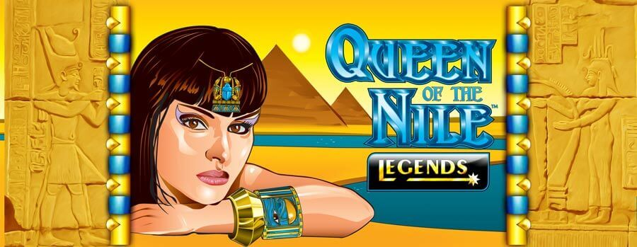

Gráficos de la tragamonedas Queen of the Nile Slots
Los aspectos visuales de Queen of the Nile Slots son, sin duda, una característica destacada. El diseño del juego captura a la perfección la esencia del antiguo Egipto, con símbolos como escarabajos, jeroglíficos y la cautivadora reina Cleopatra. La atención al detalle en la obra de arte y la música de fondo inmersiva transportan a los jugadores a la época de los faraones y las pirámides. Cada símbolo ha sido cuidadosamente diseñado para complementar el tema y la estética general mejora significativamente la experiencia de partido. Los gráficos son nítidos y claros, lo que garantiza que los jugadores se sumerjan por completo en la atmósfera del juego.
Las animaciones y los efectos especiales mejoran la práctica de partido, haciendo que cada giro se sienta como una aventura impresionante. La suavidad de las animaciones se suma al atractivo general del juego, creando una atmósfera atractiva y divertida para los jugadores. Ya sea el giro de los carretes o la animación que acompaña a una combinación ganadora, los efectos visuales del partido están bien ejecutados y agrega emoción a cada sesión de juego. Los jugadores se encontrarán anticipando ansiosamente cada giro, ansiosos por presenciar las cautivadoras animaciones que se desarrollan ante sus ojos.